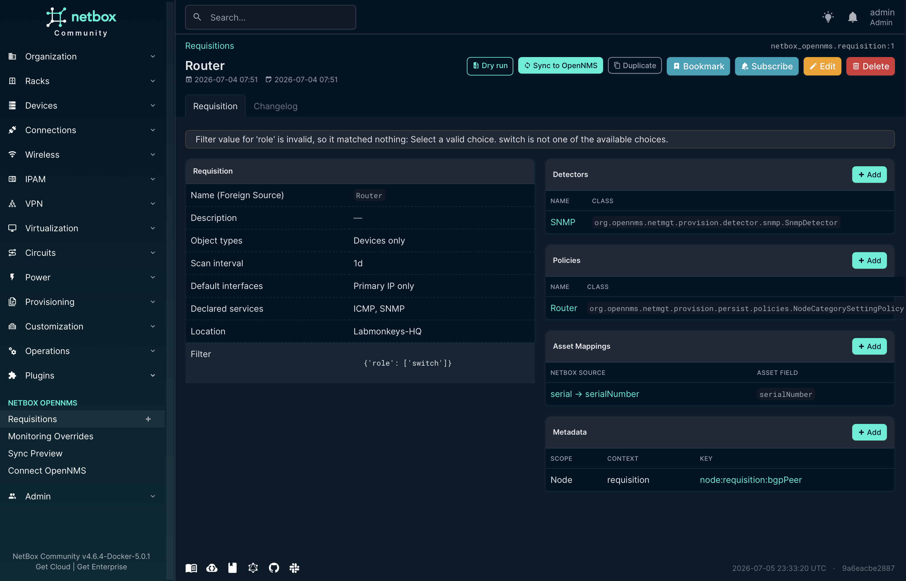

Project structure
One installable plugin package (netbox_opennms/) plus the Docker
test harness, the quickstart demo, and CI. The package is layered bottom-up —
the OpenNMS port at the base, pure translation in the middle, UI on top.
netbox-opennms-plugin/
├── netbox_opennms/ # the plugin package
│ ├── __init__.py # PluginConfig + single-sourced __version__
│ ├── client/ # OpenNMS REST client + discovery (the only I/O port)
│ ├── catalog.py # cached detector/policy/asset catalog (live + overlay)
│ ├── presets.py # curated preset overlay (labels/defaults)
│ ├── models.py choices.py # Requisition, detectors, policies, overrides, mappings
│ ├── migrations/ # schema migrations
│ ├── membership.py # filter → members; conflict resolution
│ ├── filtersets.py derivation.py validation.py
│ ├── enrichment.py # NetBox attribute → asset/metadata resolver
│ ├── translation/ # pure render: requisition + foreign-source XML
│ ├── jobs.py dryrun.py signals.py # sync/remove jobs, dry-run diff, reconciler
│ ├── forms.py views.py tables.py navigation.py urls.py api/ templates/
│ └── tests/ # unit suite + live-OpenNMS integration + spike
├── compose.yml # test stack (Postgres + Redis + NetBox test runner)
├── compose.integration.yml # overlay: disposable OpenNMS Horizon 36
├── Makefile # every CI + dev command (lint/test/build/integration)
├── quickstart/ # runnable demo: NetBox UI + worker + OpenNMS + seed
├── docs/ # this page + screenshots
└── .github/workflows/ci.yml # lint · unit · gated live integrationclient/; translation/ is pure (no network, no DB
writes); the UI reads pre-resolved specs from membership.py.
Release workflow
The version is single-sourced, main requires signed commits, and
a release is a signed tag plus a GitHub release. PyPI publishing is a planned
fast-follow.
- Bump the single source of truth —
__version__innetbox_opennms/__init__.py(pyproject reads it dynamically) — on a branch, and open a PR. - CI must be green (
make verify+ wheel build). Merge via squash or rebase. - Tag the release commit and push, then cut the GitHub release:
git tag -a v0.0.1 -m "netbox-opennms-plugin 0.0.1 — first public release"
git push origin v0.0.1
gh release create v0.0.1 --verify-tag --notes-file NOTES.mdmain protection ruleset
enforces required_signatures, so configure commit signing once —
git config commit.gpgsign true with a user.signingkey
set — or merges will be blocked. Tags are signed too (tag.gpgsign).
Contributing
Issues and pull requests are welcome. One focused change per PR; CI runs the same Makefile targets you run locally, so there are no surprises.
- Branch per change off
main; open a PR. - Conventional Commits —
feat/fix/docs/refactor/test/chore/ci, with a scope where it helps. - Sign your commits — DCO sign-off and a cryptographic
signature:
git commit -swithcommit.gpgsign true. - SPDX header on every new/edited source file
(
SPDX-License-Identifier: MIT). - Green before you push —
make verify(ruff + the full unit suite) must pass; CI enforces it.
Build from source
Python 3.12+. Install editable for development, or build the distributables.
# editable install into your NetBox virtualenv
pip install -e .
# install a tagged release straight from Git (until PyPI lands)
pip install "git+https://github.com/no42-org/netbox-opennms-plugin@v0.0.1"
# build the wheel + sdist into dist/ (also asserts the wheel ships its templates)
make buildnetbox_opennms.__version__ at build
time — the build never imports NetBox, so make build works without
a NetBox install.
Dev environment
No local NetBox install needed. The Makefile runs everything in a throwaway Postgres/Redis/NetBox container, so local and CI use the identical commands.
| Command | What it does |
|---|---|
make verify | ruff lint + the full unit test suite (what CI gates on) |
make test | the unit test suite only |
make lint | ruff (line length 88) |
make makemigrations | generate + verify migrations |
make build | wheel + sdist into dist/ |
DEVELOPER = True in NetBox's configuration.py
only if you run makemigrations outside the harness.
End-to-end tests
The unit suite never depends on OpenNMS. The live round-trip boots a disposable
OpenNMS Horizon 36 and drives real requisition imports — it is gated on
OPENNMS_LIVE_URL, runs nightly in CI, and on demand.
# boot a throwaway OpenNMS Horizon 36 and run the live round-trip
make integration
# the exploratory spike (captures real /foreignSourcesConfig payloads)
make integration-spike
Under the hood, compose.integration.yml overlays a disposable
OpenNMS onto the test stack and points the test container at it via
OPENNMS_LIVE_URL. Without that variable set, the live tests
skip, so make verify stays green with no OpenNMS around.
Local test environment
To click through a real feature — author a Requisition, add detectors/policies, dry-run, and Sync a node into OpenNMS — bring up the seeded quickstart stack: NetBox (UI + worker) and a disposable OpenNMS.
cd quickstart
docker compose --profile opennms up -d # NetBox + worker + OpenNMS Horizon 36
docker compose exec -T netbox \
/opt/netbox/venv/bin/python manage.py shell < seed.py # seed demo devices/VMs/requisitions
Then open http://localhost:8000/ (admin / admin) → Plugins →
NetBox OpenNMS:
- Connect OpenNMS — verify NetBox can reach the configured OpenNMS.
- Open a Requisition, use the panel Add buttons to attach detectors, policies, asset mappings, and metadata.
- Dry run to preview the per-node diff, then Sync to OpenNMS and watch the node appear in OpenNMS.
